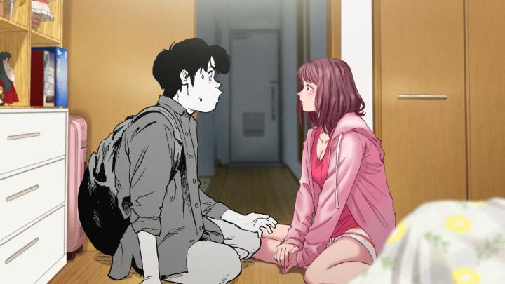
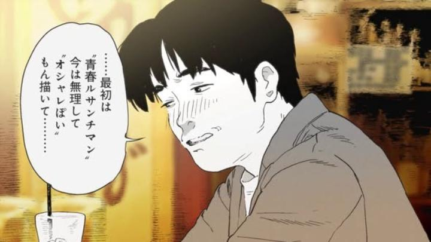

In part because of the title, I almost skipped out on the world premiere of the anime film "Cherry and Virgin" at Fantasia Film Festival 2026. I'm glad I didn't. Apparently, this was a indie film long in development. Online sources cite intended released dates as early as 2022, and in the screening's introduction, the festival's organizers were aware of and anticipating the movie as early as 2018. And despite this summer 2026 premiere, the official release year is listed as 2027. After all, the film's subject matters and indie sensibilities likely made funding and planning a marketing campaign difficult - one of the many inside jokes in the movie is a direct shoutout to Toei for helping fund and distribute (not animate) the final release. Yes, it's difficult to market, let alone recommend to friends due to the title, but the incredible originality of it is so refreshing, that I need to recommend it to you anyway. The premise follows two characters, Ryo and Ami. Both are manga illustrators and otaku geeks, and entering their 30's, neither have had a serious romantic relationship, and both are virgins. Not necessarily out of choice, and not a source of lonlieness either; their hobbies and work have just caused the idea to be put off until now. But after watching friends and family get married, they finally decide to try. After joining a dating app, and after a few failed dates with other prospective singles, they find each other. Bonding over their love of manga and overcoming features that others might judge (Ryo is a semi-professional erotic manga artist, and Ami is a boys-love genre fan), they make a genuine connection. And hilariously, and perhaps sweetly, every awkward thing that could happen occurs over the weeks that follow. To me, the most exciting thing about the movie is how it's rendered. Thematically connected to the characters and their manga work, every character, as well as the background, is drawn like a manga. Specifically, the manga style each character is comfortable in. Ryo's is black and white, vaguely similar to the art of Rintaro or Tatsumi. Ami's art, as she defines herself as a illustrator, is bursting in colour and softer features, appropriate for shojo or josei genres. And the side characters, friends to Ryo and Ami, are each hobbyist or professional manga or content creators too, and each of them is rendered in THEIR style - some like Gundam robots, like CGI vtuber girls, some like amateur imitations from a child fan, and many more. In some shots, you'll see several different styles in the same scene! Beyond that initial novelty, the movie plays with the technique to fantastic effect, morphing how each character sees themself under flattery or criticism, or briefly, when they see each other or the world in that person's style rather than their own. It's a fantastic use of visual design. To simply call the film "anime" feels like a disservice. There's a subtle difference to how anime and manga look in design, and this looks much more like manga in motion rather than any anime you've seen. Rotoscoping with live actors was applied to help consider movement while keeping the production budget low. And the frame-rate is deliberately low and limited. I would normally consider this a flaw in the production, and it does limit how much can be done in the more important scenes, but since the movie's inspiration is manga, not anime or animation, I suspect this was both a creative choice as well as a necessary one for budget restraints, and I wouldn't push to change it from how it is.

As far as the story goes, it's a romantic-comedy, with a strong reliance on easter eggs and deep-cut references to anime and manga and doujinshi that Ryo and Ani would have grown up on (think from the 1990's and 2000's). Those deep cuts might alienate some viewers, but for the right audience (e.g. my audience at Fantasia), there was audible laughter and nodding whenever these references appeared. For the sake of the story, it helped make the two leads feel more relatable and real. In fact, in a variety of ways, the characters feel real and genuine throughout. We see this in their flaws, self-doubts, and their struggles in trying to connect with other people and not say something offensive, or to not say nothing at all and let dead air fill the room. Even after Ryo and Ani do find they've found a connection and see each other on multiple dates, it takes a long time for either of them to muster the courage to romantically advance the relationship, even though they both clearly want to. Yes, sex eventually occurs between the two consentual adults, this is an mature film intended for older audiences. But even then, it's able to balance towards feeling romantic, rather than laiden with fan-service. At times, the writing might be a little TOO honest. In his head, Ryo is a little bit of a pervert, while trying to be respectful to the outside world - my audience groaned in discomfort when the camera focused on looking down Ani's shirt in one scene, while Ryo does his best to avert his gaze. But most of the time, my audience was full of riotous laughter. Honesty plays a part there too; it includes Ryo's embarrassing middle-age health issues, Ani's ADHD tendancies to make her bedroom presentable at the worst possible time, and so on. Sometimes, a wild out-of-nowhere wallbreaking scene occurs to further push the comedy. And of course, the subject matter (sex) naturally makes the situations awkward, and the audience can't help but laugh. "Cherry and Virgin" is one of the funniest films I've ever seen, and excluding "Night is Short, Walk On Girl," is the most fun I've had watching any movie in a crowded theare. If I had to critisize the writing anywhere, it's in the final act, where a misunderstanding causes a rift that threatens the otherwise perfect relationship between the two leads. It's standard for the genre, and only present to create tension and drama. There are dropplets of realism there to appreciate, and perhaps this reminds us that no relationship is without bumps in the road, but it still felt largely unnecessary. I would have cut that final act out entirely - where it left us right before was a perfect conclusion to the journey each character was on. But whatever nitpicks I make are minor. "Cherry and Virgin" is a such a delightful surprise, a showcase for doing something new with animation, and telling a mature and respectful story in as goofy a manner possible. It's exactly why I watch movies. - "Ani" More reviews can be found at : https://2danicritic.github.io/ Previous review: review_Charlotte Next review: review_Chicken_for_Linda!